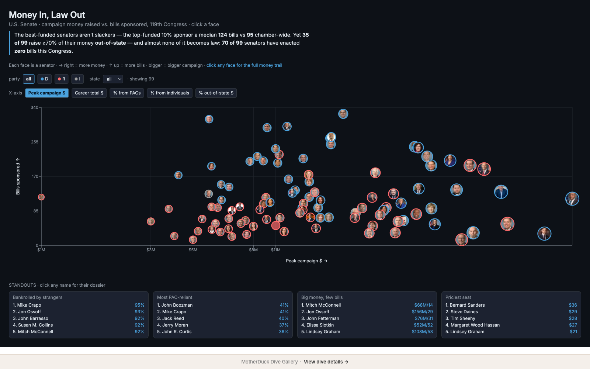
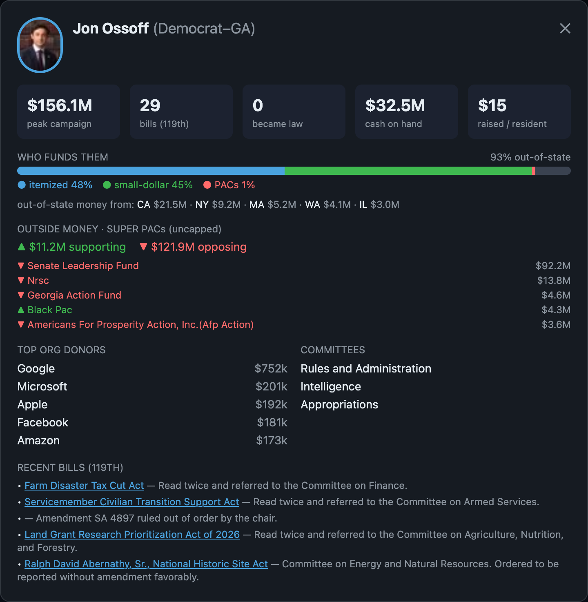

A MotherDuck Dive
Money In
Law Out
Who funds the U.S. Senate?
Every face is a
real senator.

70
/99
senators passed
zero laws
this Congress
…and most raise the majority of their money
OUT OF STATE
Jon Ossoff
Democrat · Georgia

Raised
$156.1M
From out of state
93%
Top donors
Google · Microsoft · Apple
Super-PAC money to defeat him
$121.9M
Live · FEC + Congress data
Follow the money.
Explore all 99 senators in the interactive Dive.
★
Vote · MotherDuck Dive Gallery
motherduck.com/dive-gallery